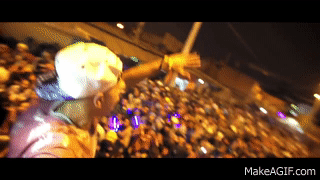
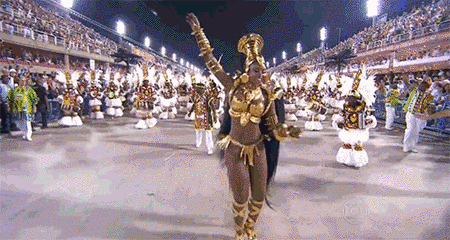
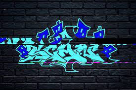
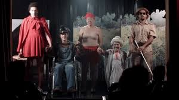
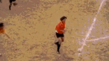

Expo Favela
Eventos como a Expo Favela são exemplos claros do impacto positivo do empreendedorismo nas comunidades, funcionando como um ponto de encontro para negócios locais, artistas e projetos sociais. Esses eventos não apenas promovem a cultura local, mas também fortalecem a economia criativa, oferecendo oportunidades para que empreendedores e artistas ganhem visibilidade e ampliem suas redes de contato. Além disso, eles incentivam a troca de experiências e a colaboração entre diferentes segmentos, impulsionando o crescimento e a inovação dentro da própria comunidade. Ao valorizar o talento local e promover a inclusão social, eventos como a Expo Favela contribuem para o empoderamento dos moradores e para o desenvolvimento sustentável da região.
Bailes Funk
Os bailes funk são uma das manifestações culturais mais emblemáticas das favelas, refletindo a alma e o cotidiano dessas comunidades. Com suas batidas vibrantes e letras que narram lutas, amores e desafios, esses eventos se tornaram símbolos de resistência e identidade cultural. Mais do que entretenimento, são espaços de expressão artística onde jovens mostram talentos como MCs, DJs e dançarinos, conectando pessoas e fomentando a economia local. Apesar dos preconceitos enfrentados, os bailes funk transcendem os limites das comunidades, levando sua influência a públicos de todo o mundo. Representam mais do que música: são celebrações de identidade, autenticidade e resistência.
Rodas de Samba
As rodas de samba são encontros tradicionais que mantêm viva a história e a música popular brasileira. Com instrumentos acústicos e canções nostálgicas, esses eventos reforçam os laços comunitários.são encontros tradicionais que celebram e preservam a história e a música popular brasileira, mantendo viva uma das expressões mais genuínas da nossa cultura. Com instrumentos acústicos como o pandeiro, o cavaquinho e o violão, e canções que evocam nostalgia e emoção, esses eventos proporcionam uma conexão única entre gerações. Mais do que momentos musicais, as rodas de samba reforçam os laços comunitários, criando um espaço de convivência, alegria e partilha de histórias. Elas são verdadeiros patrimônios culturais que promovem a união, valorizam as raízes brasileiras e mantêm viva a essência do samba como símbolo de identidade nacional.
Festas Juninas
As festas juninas comunitárias são celebrações vibrantes que reúnem danças, comidas típicas e música tradicional em um ambiente festivo e acolhedor. Essas festas resgatam e valorizam a cultura rural brasileira, mantendo vivas tradições como as quadrilhas, os trajes caipiras e os ritmos como o forró e o baião, que trazem um charme único ao evento. Além do aspecto cultural, as festas juninas promovem a integração entre os moradores, fortalecendo o senso de comunidade. São oportunidades para confraternização, troca de experiências e celebração coletiva, ao mesmo tempo em que movimentam a economia local por meio da venda de alimentos, artesanatos e outras atividades típicas. Esses eventos são um verdadeiro símbolo de identidade e união popular.

Grafite e Hip-Hop
O grafite e o hip-hop O grafite e o hip-hop são expressões artísticas poderosas que dão voz às periferias e transformam os espaços urbanos em verdadeiras galerias a céu aberto. O grafite, com suas cores vibrantes e traços marcantes, é usado para contar histórias, expressar protestos e refletir questões sociais, enquanto o hip-hop, por meio da música, da dança e da poesia, carrega mensagens de resistência, identidade e empoderamento. Juntas, essas formas de arte não apenas embelezam as comunidades, mas também criam diálogos entre os moradores e a sociedade, promovendo a valorização cultural e inspirando novas gerações. São símbolos de criatividade e resiliência que mostram o poder transformador da arte em cenários urbanos.
Teatro Comunitário
O teatro comunitário oferece uma forma única de expressão, permitindo que moradores locais encenem peças que refletem seus desafios, histórias e sonhos. Por meio da arte, eles compartilham suas realidades, criando uma conexão profunda entre a comunidade e o público. O teatro torna-se, assim, uma poderosa ferramenta de transformação social, promovendo o diálogo, a reflexão e a conscientização sobre questões locais e sociais. Além de ser um meio de entretenimento, fortalece a identidade coletiva e o sentimento de pertencimento, ao dar voz a quem muitas vezes não é ouvido.
Futebol Amador
Os campeonatos de futebol amador Os campeonatos de futebol amador são eventos que movimentam as comunidades, incentivando a prática esportiva e promovendo a união entre os moradores. Cheios de paixão e competitividade, esses campeonatos vão além do futebol, funcionando como um ponto de encontro onde as pessoas se conectam, compartilham experiências e apoiam seus times. Eles fortalecem os laços comunitários, criando um ambiente de convivência saudável e celebrando o espírito de coletividade. Além disso, esses eventos valorizam o esporte como meio de inclusão social, destacando talentos locais e oferecendo oportunidades para jovens se envolverem de forma positiva.
